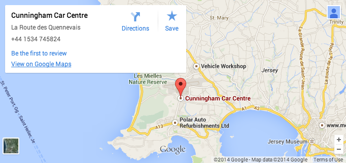

Cunningham Car Centre
Cunningham Car Centre
- Cunningham Car Centre, Total Service Centre, La Route des Quennevais, St Brelade, Jersey, JE3 8FP, Channel Islands.
- Phone 01534 745824
- Fax 01534 742367
- cunninghamcarcentre@gmail.com
Cunningham Car Centre are BSI accredited (KM561429) accident repair and car body work specialists in Jersey, Channel Islands, and approved repairers for National Farmers Union, Islands Insurance and other leading insurers.
How to find us.
We're between the two petrol stations on the airport road. You'll see our sign from the road.
